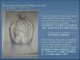
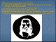
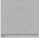
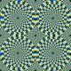
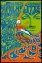
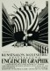
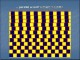

行為主義
16
有看到獅子嗎.jpg
79.02 KB
17
有看到那張臉嗎.jpg
74.05 KB
18
柱子是圓的還是方的.jpg
58.43 KB
19

看到海豚或是一對親密的夫妻.jpg
85.17 KB
20

看到耶穌了嗎.jpg
83.98 KB
21

看著黑點身體前後移動會看到什麼.jpg
26.48 KB
22

看起來會旋轉嗎.jpg
128.62 KB
23
總共有九張臉.jpg
74.31 KB
24
背景1.jpg
48.04 KB
25

背景2.jpg
72.10 KB
26

背景3.jpg
59.34 KB
27

這些線是平行的嗎.jpg
97.50 KB
2 / 2